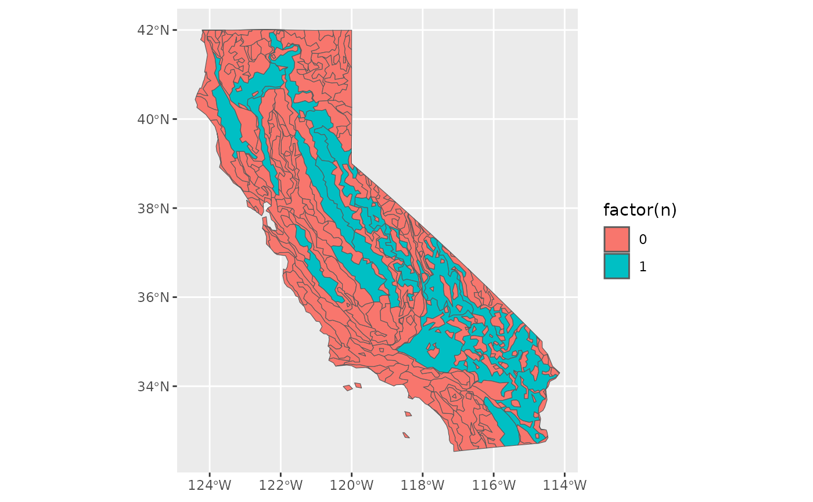

Determine the sample size for n ecoregions in an area
EcoregionBasedSample.RdIntersect a vector data file of ecoregions (ecoregions) with the range of a focal taxon (x) and selects n ecoregions to sample.
If fewer than n ecoregions exist in the range of the species, then extra samples are added to the largest ecoregions by their
area proportions to meet n.
This function has adequate support for the official Omernik L4 shapefiles created by the EPA, and has worked with minimal experimentation to other vector data sources. If more ecoregions exist across the range of the species than n (very common), select a method to determine how sample sizes (in this instance 1 sample per ecoregion) are selected. Methods include sampling from the n largest, orsmallest ecoregions by number, or the ecoregion with the most disconnected habitat (measured soley by the number of polygons). Each of these three methods then returns the largest polygon within the criterion.
A note on 'polygons'. Simple features are able to store polygon data in two main formats, a 'MULTIPOLYGON', where all individual polygons composing a class are stored collectively, or as 'POLYGONS' where each individual polygon is a unique entry within the class. 'Polygons' are generally used when two areas of the same class are discontinuous, and an analyst wants to easily analyze them separately. 'MULTIPOLYGONS' are generally created by an analyst interested in understanding properties of the entire class. The EPA Omernik spatial data set comes with both 'POLYGONS' and 'MULTIPOLYGONS', I have used it somewhat extensively and believe that the creators struck a happy balance between creating too many small polygons, e.g. for areas like coastal reef island (a MULTIPOLYGON use case), and big polygons. I do not modify them here, and on rare occasion (essentially islands), what I refer to as a 'polygon' may technically be a multipolygon.
Usage
EcoregionBasedSample(
x,
ecoregions,
OmernikEPA,
n,
ecoregion_col,
increase_method,
decrease_method
)Arguments
- x
a range of species as a simple feature (sf) object.
- ecoregions
An ecoregion vector data file (~shapefile) in sf.
- OmernikEPA
Boolean. TRUE indicates that the data are from the US EPA and minimally modified, if FALSE several more input are required to ensure the function maps over appropriately. If left blank the default method is to scan for an exact match of the standard Omernik ecoregion field (column) names, and if matched dispatched to the Omernik module, else fail unless the associated columns are specified (SEE BELOW).
- n
Numeric. desired total number of samples across this range
- ecoregion_col
Character. Name of the column contain the finest resolution data which are to be used for the analysis. For an Omernik L4 file it defaults to the relevant columns automatically, if a different type of file is submitted, and these not specified the function fails.
- increase_method
Character. Method to implement if the number of L4 ecoregions is less than n.
- decrease_method
Character. Method to implement if the number of L4 ecoregions is greater than n. 'Largest' (the default) will select the n largest ecoregions by total area, and then select the largest single polygon within each of these classes. 'Smallest' will select the n smallest ecoregions by total area, and then select the largest single polygon within these classes. 'Most' will select the n ecoregions with the most polygons, and select the largest polygon from each.
Value
An sf object, the same length as the input data set, with only the finest resolution eco level, and geometry fields retained, and a new column 'n' indicating how many accession should be gather from the ecoregion.
Examples
# First example is using a subset (and with simplified geometry) Omernik L4
# ecoregion shapefile from the EPA. Which as of the time of writing were
# available, at no cost, at the following URL
# https://www.epa.gov/eco-research/level-iii-and-iv-ecoregions-continental-united-states
polygon <- spData::us_states |>
dplyr::select(NAME) |>
dplyr::filter(NAME == 'California') |>
sf::st_transform(4326)
Weco <- sf::st_read(
file.path(system.file(package="safeHavens"), 'extdata', 'WesternEcoregions.gpkg'),
quiet = TRUE)
head(Weco)
#> Simple feature collection with 6 features and 17 fields
#> Geometry type: MULTIPOLYGON
#> Dimension: XY
#> Bounding box: xmin: -120.6736 ymin: 36.50122 xmax: -118.0553 ymax: 40.4275
#> Geodetic CRS: WGS 84
#> NA_L2NAME NA_L2CODE L3_KEY NA_L3NAME
#> 1 COLD DESERTS 10.1 13 Central Basin and Range Central Basin and Range
#> 2 COLD DESERTS 10.1 13 Central Basin and Range Central Basin and Range
#> 3 COLD DESERTS 10.1 13 Central Basin and Range Central Basin and Range
#> 4 COLD DESERTS 10.1 13 Central Basin and Range Central Basin and Range
#> 5 COLD DESERTS 10.1 13 Central Basin and Range Central Basin and Range
#> 6 COLD DESERTS 10.1 13 Central Basin and Range Central Basin and Range
#> Shape_Leng L2_KEY US_L3CODE NA_L1CODE NA_L3CODE
#> 1 94308.62 10.1 COLD DESERTS 13 10 10.1.5
#> 2 49617.99 10.1 COLD DESERTS 13 10 10.1.5
#> 3 2106033.22 10.1 COLD DESERTS 13 10 10.1.5
#> 4 165631.31 10.1 COLD DESERTS 13 10 10.1.5
#> 5 510158.56 10.1 COLD DESERTS 13 10 10.1.5
#> 6 87086.56 10.1 COLD DESERTS 13 10 10.1.5
#> NA_L1NAME US_L4NAME
#> 1 NORTH AMERICAN DESERTS Sierra Nevada-Influenced Semiarid Hills and Basins
#> 2 NORTH AMERICAN DESERTS Sierra Nevada-Influenced Semiarid Hills and Basins
#> 3 NORTH AMERICAN DESERTS Sierra Nevada-Influenced Semiarid Hills and Basins
#> 4 NORTH AMERICAN DESERTS Sierra Valley
#> 5 NORTH AMERICAN DESERTS Upper Owens Valley
#> 6 NORTH AMERICAN DESERTS Mono-Adobe Valleys
#> US_L3NAME
#> 1 Central Basin and Range
#> 2 Central Basin and Range
#> 3 Central Basin and Range
#> 4 Central Basin and Range
#> 5 Central Basin and Range
#> 6 Central Basin and Range
#> L4_KEY US_L4CODE
#> 1 13aa Sierra Nevada-Influenced Semiarid Hills and Basins 13aa
#> 2 13aa Sierra Nevada-Influenced Semiarid Hills and Basins 13aa
#> 3 13aa Sierra Nevada-Influenced Semiarid Hills and Basins 13aa
#> 4 13ab Sierra Valley 13ab
#> 5 13ac Upper Owens Valley 13ac
#> 6 13ad Mono-Adobe Valleys 13ad
#> L1_KEY Shape_Area NAME
#> 1 10 NORTH AMERICAN DESERTS 285751793 California
#> 2 10 NORTH AMERICAN DESERTS 103496425 California
#> 3 10 NORTH AMERICAN DESERTS 6613879510 California
#> 4 10 NORTH AMERICAN DESERTS 449164266 California
#> 5 10 NORTH AMERICAN DESERTS 1763113790 California
#> 6 10 NORTH AMERICAN DESERTS 162895833 California
#> geom
#> 1 MULTIPOLYGON (((-118.694 37...
#> 2 MULTIPOLYGON (((-119.323 38...
#> 3 MULTIPOLYGON (((-119.845 38...
#> 4 MULTIPOLYGON (((-120.1395 3...
#> 5 MULTIPOLYGON (((-118.463 37...
#> 6 MULTIPOLYGON (((-118.7649 3...
out <- EcoregionBasedSample(polygon, Weco)
#> Warning: attribute variables are assumed to be spatially constant throughout all geometries
#> Warning: attribute variables are assumed to be spatially constant throughout all geometries
sum(out$n)
#> [1] 20
ggplot2::ggplot() +
ggplot2::geom_sf(data = out, ggplot2::aes(fill = factor(n)))

# This second example is from a recent publication by Morreno et al. 2022 and
# presents biogeographic regions of the Neotropics and is available from a
# google drive linked in the publication describing there creation located at
# https://www.scielo.br/j/aabc/a/hPft4CK6RV8QBr8nP7bxhRQ/?lang=en#
# Essentially we showcase how a user can maintain this functions utility
# while catering to data in a format differing from the Omernik L4 distribution.
neo_eco <- sf::st_read(
file.path(system.file(package="safeHavens"), 'extdata', 'NeoTropicsEcoregions.gpkg'),
quiet = TRUE)
sp_range <- sf::st_polygon( # complete
list(
rbind(
c(-80,-5), c(-80,10), c(-60,10), c(-55,5),
c(-60,-5), c(-80,-5)
)
)
) |>
sf::st_sfc() |>
sf::st_as_sf() |>
sf::st_set_crs(4326) |>
dplyr::rename(geometry = x) |>
dplyr::mutate(Species = 'Da species')
out <- EcoregionBasedSample(sp_range, neo_eco, ecoregion_col = 'Provincias')
#> Warning: attribute variables are assumed to be spatially constant throughout all geometries
#> Warning: attribute variables are assumed to be spatially constant throughout all geometries
sum(out$n)
#> [1] 19
ggplot2::ggplot() +
ggplot2::geom_sf(data = neo_eco) +
ggplot2::geom_sf(data = out, ggplot2::aes(fill = factor(n))) +
ggplot2::geom_sf(data = sp_range, fill = NA, color = 'Red')
 # Note that both of the files of the above ecoregions have had their geometry
# simplified, i.e. made less complex - you should notice they look slightly angular
# like an old cartoon such as Rugrats or so. We do this to reduce the file size
# to make it easier to install the package, and reduce the run time of the functions
# for these simple examples.
# Note that both of the files of the above ecoregions have had their geometry
# simplified, i.e. made less complex - you should notice they look slightly angular
# like an old cartoon such as Rugrats or so. We do this to reduce the file size
# to make it easier to install the package, and reduce the run time of the functions
# for these simple examples.